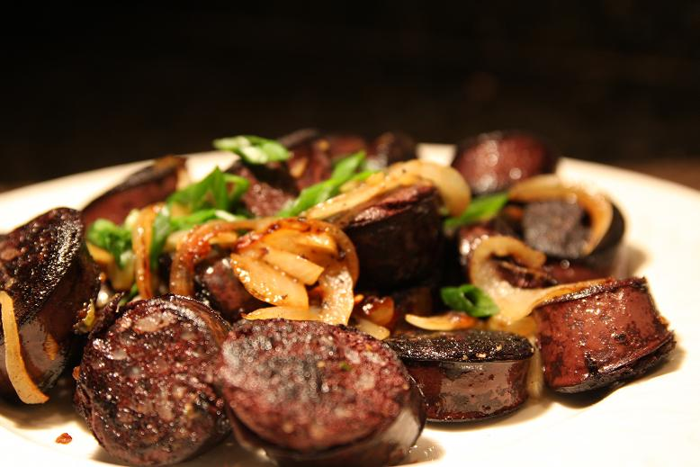

Tibetan Blood Sausage

Gyurma is a blood sausage made with yak or sheep's blood in Tibetan cuisine. Rice or roasted barley flour can be added as filler.
Ingredients
Beef
rice
Blood
Rapeseed Oli
Butters
Hot sauces
Steps
Grind beef through 1'4” (6 mm) plate.
Mix spices with beef and the blood.
Stuff loosely into 28 mm sheep casings.
Cook in water at 80° C (176° F) for 30 minutes.
Place in cold water for 10 minutes.
Dry briefly and refrigerate.